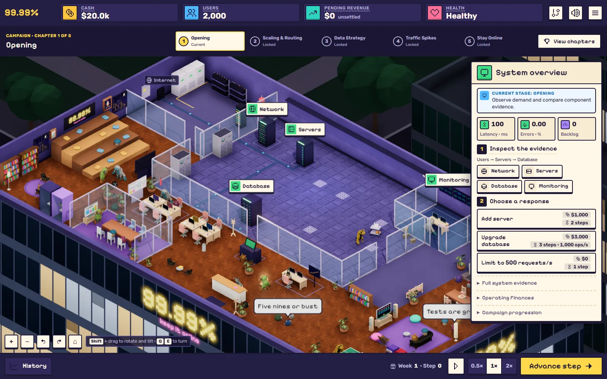
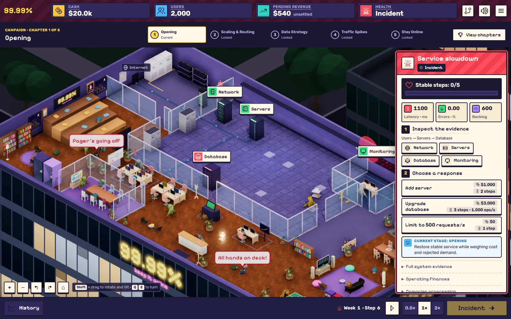
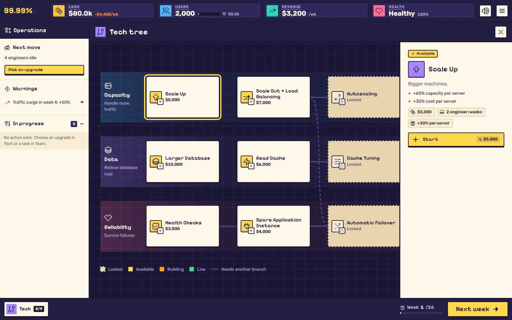

Continuous play · Guided challenges
Campaign
Grow one company through five chapters. Inspect any part of the system, choose a response and watch it take effect. Pause whenever you need to think.
For NUS Computing students
A system-design tycoon. Run a startup from a 3D office, find the bottleneck when traffic spikes, and keep the company online.
No download · Play as a guest or sign in with Google

You're the tech lead. Choose how you want to play. Each mode keeps its own progress.

Continuous play · Guided challenges
Grow one company through five chapters. Inspect any part of the system, choose a response and watch it take effect. Pause whenever you need to think.

Week by week · 26-week challenge
Grow to 50,000 users in 26 weeks. Manage cash and engineers, research nine upgrades across capacity, data and reliability, and get through the outages without going broke.
Your servers, investments and progress carry forward from one chapter to the next.
Traffic grows and the service slows down. Read the latency, errors and backlog, inspect each component and find your first bottleneck.
Add servers, put a load balancer in front of them and make sure new capacity actually receives traffic.
Add a read cache, tune it and see how read-heavy and write-heavy workloads change the load on your database.
Demand surges in sudden spikes. Turn on autoscaling and watch it add servers as traffic rises and retire them when it falls.
Applications fail. Prepare health checks, spare instances and automatic failover so the service keeps running.
Create a free account with Google and your company is saved to the cloud, not just to one browser. Pick up where you left off.
Create your free accountIn the game, open Account and cloud saves on the title screen and choose Sign in with Google.
Use the Google account you already have. No new password to remember.
Your company is stored in your account, so clearing your browser doesn't wipe your progress.
Skip the account and progress saves in your browser. You can export and import save files from the menu.
Try a choice. See why adding more servers isn't always the answer.
Illustrative example, not the game's numbers: read-heavy traffic, after upgrades take effect.
Choose an upgrade to see what happens.
No. Basic web-development knowledge is enough. You learn how scaling, caching, databases and failover work together by seeing the consequences of your choices.
Open the game in your browser and choose Campaign or Classic. A laptop or desktop works best. There's nothing to install.
No. You can play as a guest, and your progress stays in that browser. Sign in with Google from the title screen to save your company to your account.
Not yet. CS3216 Group 5 is building it and adding to it every week. Use the Give feedback button in the game to tell us what to improve.
Play a run. See what breaks. Figure out your next move.
Play free in your browser